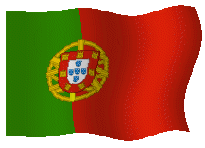

>>Rejs etapowy z Portugalii do Grecji lipiec - sierpieñ 2021 <<
30 Czerwca z Amora-Seixal ruszylismy w rejs do Grecji. Na pocz¹tek, dla rozgrzewki awaria ch³odzenia silnika, jak siê okaza³o pokrywa zbiorniczka przelewowego/filtra wody by³a nieszczelna
i przepuszcza³a powietrze !!! Z jedniodniowym opóŸnieniem ruszyliœmy w stronê Cascais przep³ywaj¹c pod mostem Ponte 25 de Abril w Lizbonie.
Po zatankowaniu paliwa w marine Oeiras po¿eglowaliœmy na po³udnie i o 3:00 stanêlismy na kotwicy w Sines, aby odwiedziæ Vasco da Gamê.
w Lizbonie.
Po zatankowaniu paliwa w marine Oeiras po¿eglowaliœmy na po³udnie i o 3:00 stanêlismy na kotwicy w Sines, aby odwiedziæ Vasco da Gamê.  Po miniêciu Cabo de Sao Vincente stajemy na noc w zatoce w porcie Sagres.
Mijamy Lagos, Portimao i Albufeiry stajemy na noc na rozlewiskach pod Faro w odnodze prowadz¹cej do Olhao. Nastêpnego dnia rano wystartowalismy na drug¹ stronê Zatoki Kadyks do mariny Rota
vis a vis Kadyksu. Musieliœmy w Rocie odczekaæ dwa dni ze wzglêdu na wiatr ponad 40 kts w Ciesninie Gblraltarskiej wiej¹cy na Atlantyk. Do Gibraltaru 115 Nm przelecieliœmy w przeci¹gu doby, ale przed ska³¹ Gibraltarsk¹ zaczê³o nieŸle szkwaliæ do 36 kts.
Niestety roler genui zablokowa³ siê i na prawie niezrefowanej genuii musieliœmy szybko siê schowaæ za ska³¹ gibraltaru. Fale wzros³y do 2-3 m, tak ¿e z grzbietów zje¿dzaliœmy z prêdkoœci¹ ponad 16 wêz³ów.
W prawdzie Navionics na tracku z tego odcinka zarejestrowa³
Vmax 23,5 kts , ale traktujê to jako b³¹d.
PóŸnym popo³udniem weszliœmy do mariny Sotogrande,
która po 13 latach zmieni³a siê w ekskluzywn¹ rezydencjê z prywatnymi domami i przystaniami, z zapleczem równie eleganckich sklepów.
Po miniêciu Cabo de Sao Vincente stajemy na noc w zatoce w porcie Sagres.
Mijamy Lagos, Portimao i Albufeiry stajemy na noc na rozlewiskach pod Faro w odnodze prowadz¹cej do Olhao. Nastêpnego dnia rano wystartowalismy na drug¹ stronê Zatoki Kadyks do mariny Rota
vis a vis Kadyksu. Musieliœmy w Rocie odczekaæ dwa dni ze wzglêdu na wiatr ponad 40 kts w Ciesninie Gblraltarskiej wiej¹cy na Atlantyk. Do Gibraltaru 115 Nm przelecieliœmy w przeci¹gu doby, ale przed ska³¹ Gibraltarsk¹ zaczê³o nieŸle szkwaliæ do 36 kts.
Niestety roler genui zablokowa³ siê i na prawie niezrefowanej genuii musieliœmy szybko siê schowaæ za ska³¹ gibraltaru. Fale wzros³y do 2-3 m, tak ¿e z grzbietów zje¿dzaliœmy z prêdkoœci¹ ponad 16 wêz³ów.
W prawdzie Navionics na tracku z tego odcinka zarejestrowa³
Vmax 23,5 kts , ale traktujê to jako b³¹d.
PóŸnym popo³udniem weszliœmy do mariny Sotogrande,
która po 13 latach zmieni³a siê w ekskluzywn¹ rezydencjê z prywatnymi domami i przystaniami, z zapleczem równie eleganckich sklepów.